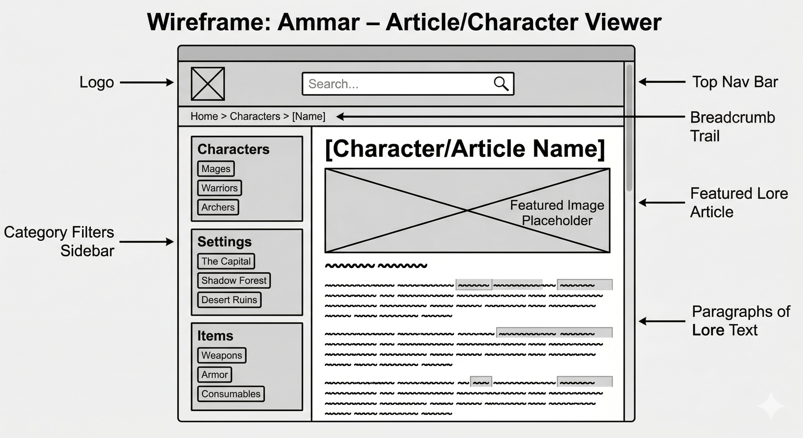
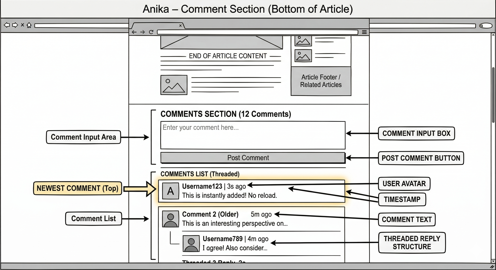
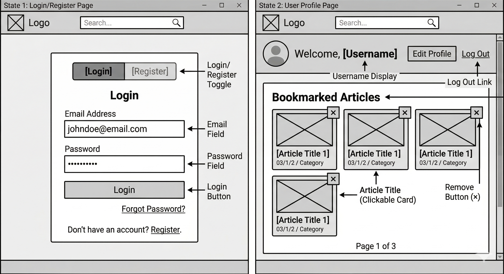
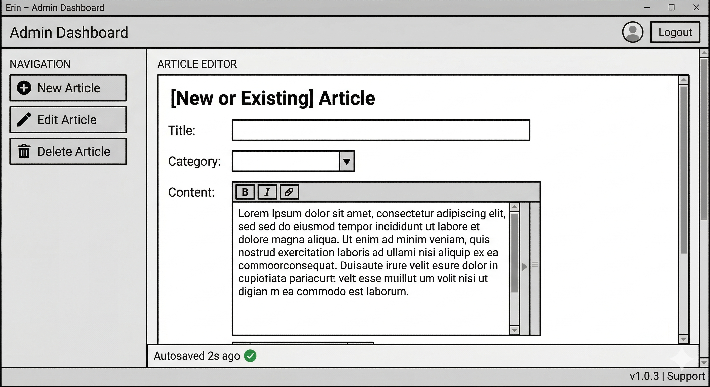

1. Names
Team: Team 48
Members: Barzin Vazifedoost, Erin Sobers, Anika Agnihotri, Ammar Khan
Client: TBD
App: ExtremityVault
2. Purpose
ExtremityVault is a fandom-style encyclopedia for our client's fictional novel. The site will contain lore pages covering characters, settings, arcs, and items, and will also support connecting with the author, purchasing novels, and community discussion through forums.
This addresses the client's need for a central hub where readers can explore and engage with the world of the novel — something the client currently lacks.
Design Principles
Ease of Navigation: Highlighted keywords, clear paragraph/image sectioning, and separate tabs for lore, shopping, and forums prevent information overload and give users clear visual cues.
Error Prevention: Passwords and emails are validated against the database before allowing access.
Constraints: Only authorized admins can edit articles. Payment and sensitive input fields enforce valid data entry.
3. Data Description
Articles
Stores all wiki/lore pages for the encyclopedia.
article_id— INT, Primary Keytitle— VARCHARcontent— TEXTcategory— VARCHAR (e.g. character / setting / item)created_at— DATETIMEupdated_by— INT, FK → Users
Users
Stores registered fan accounts.
user_id— INT, Primary Keyusername— VARCHARemail— VARCHARpassword_hash— VARCHARrole— ENUM ('user', 'admin')created_at— DATETIME
Bookmarks
Saves favourite articles per user.
bookmark_id— INT, Primary Keyuser_id— INT, FK → Usersarticle_id— INT, FK → Articlessaved_at— DATETIME
Comments
Stores discussion threads on articles.
comment_id— INT, Primary Keyarticle_id— INT, FK → Articlesuser_id— INT, FK → Userscontent— TEXTposted_at— DATETIME
4. Functions Performed by the App
- View a lore article — Displays title, category, featured image, and full content. SELECT from Articles by ID or category filter.
- Live search articles — As the user types, matching article titles appear in a real-time dropdown with no page reload. Implemented via AJAX SELECT … WHERE title LIKE input.
- Create / edit / delete article (admin only) — Admin dashboard form with title, category, and content fields. Submit → INSERT; save edits → UPDATE; delete → DELETE from Articles.
- Autosave draft — While an admin types, the draft is saved every few seconds. A status indicator shows "Autosaved". Handled via async AJAX UPDATE to Articles.
- Register / login — Registration form INSERTs a new row into Users with a hashed password. Login starts a session that persists across pages.
- Submit a comment — Text box and Post button at the bottom of every article. On submit, the comment appears instantly without a page reload via AJAX INSERT into Comments.
- View comments — All comments for an article are displayed in chronological order on page load via SELECT … WHERE article_id matches.
5. Roles of Team Members
Ammar Khan — Character Viewer
Building the main encyclopedia interface where users view articles about characters, settings, and items.
- Database: fetch article data from the Articles table
- Implement live search bar (AJAX, no page reload)
- PHP to query the DB, JS for live search, HTML/CSS for reading UI
Erin Sobers — Editor Manager
Building the admin dashboard for the client to add, edit, and remove lore articles.
- Database: INSERT new articles, UPDATE existing text, DELETE rows
- Implement async autosave so drafts persist while typing
- PHP for secure form handling, JS for autosave logic, dashboard UI
Barzin Vazifedoost — Auth & Preferences
Building user accounts, login, and a bookmarks system for saving favourite lore pages.
- Database: INSERT users, manage Bookmarks (add/remove)
- Authentication system, session management, safe password storage
- Registration forms and user profile page styling
Anika Agnihotri — Interaction Manager
Building the comment section and discussion board at the bottom of each lore article.
- Database: store comments in Comments table, retrieve by article_id
- AJAX comment submission — appears instantly without page refresh
- PHP to link comments to users/articles, JS for animations, HTML/CSS for threads
6. Wireframes
Ammar — Article / Character Viewer
Top nav bar with live search, breadcrumb trail, category filters sidebar (Characters, Settings, Items), and featured lore article panel.

Anika — Comment Section
Comment input box and Post button at the bottom of each article, with a threaded comment list showing newest first, user avatars, and timestamps.

Barzin — Login / Register & User Profile
Login/Register toggle form, and a profile page displaying bookmarked articles as clickable cards with a remove button, paginated.

Erin — Admin Dashboard
Sidebar navigation for New / Edit / Delete Article, a rich article editor with title, category, and content fields, and an autosave status indicator.

7. Increments
Increment 1 — Target: Lab 12.2
- Ammar: Basic article display page with static data or one DB-connected article
- Erin: Admin form that can INSERT a new article into the DB
- Barzin: Registration and login form with session management
- Anika: Comment display pulled from DB for a hardcoded article ID
Increment 2 / Final
Full functionality: live search, autosave, bookmarks, AJAX comment posting, role-based access control, polished UI.
8. Client Feedback
The client asked that we prioritize the character/lore viewer as the most reader-facing part of the site, and keep the admin dashboard simple enough that they can manage content independently. No major changes to the plan were needed based on their feedback.
On design aesthetic, the client stated: "...whimsical."